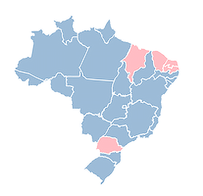

Litigância
Predatória E-XYON
Predatória E-XYON
MS
Advogado: Nome do advogado
Processos distribuídos entre: 01/07/2024 - 18/11/2024
Litigantes por região

Baixo
Atenção
Crítico
Empresa
ProcessosRecomendações CNJ
- Requerimentos de justiça gratuita apresentados sem justificativa, comprovação ou evidências mínimas de necessidade econômica.
- Pedidos habituais e padronizados de dispensa de audiência preliminar ou de conciliação.
- Ajuizamento de ações em comarcas distintas do domicílio da parte autora, da parte ré ou do local do fato controvertido.
- Proposição de várias ações judiciais sobre o mesmo tema, pela mesma parte autora, distribuídas de forma fragmentada.
- Distribuição de ações judiciais semelhantes, com petições iniciais que apresentam informações genéricas e causas de pedir idênticas.
- Apresentação de procurações incompletas, com inserção manual de informações ou assinatura eletrônica não qualificada.
- Concentração de grande volume de demandas sob o patrocínio de poucos profissionais.
- Formulação de pedidos declaratórios sem demonstração da utilidade, necessidade e adequação da prestação jurisdicional.